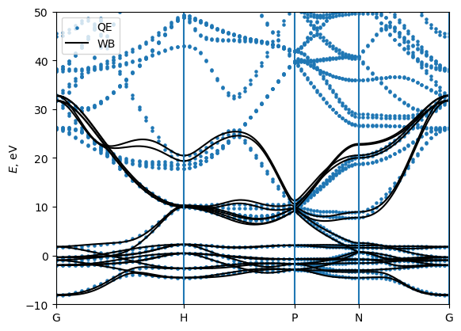
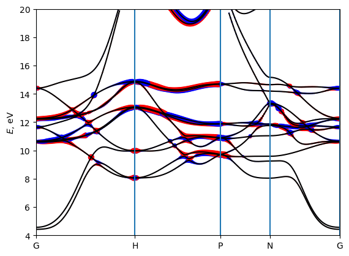
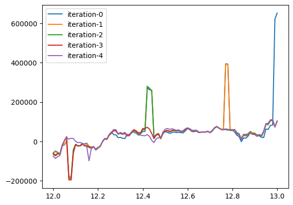
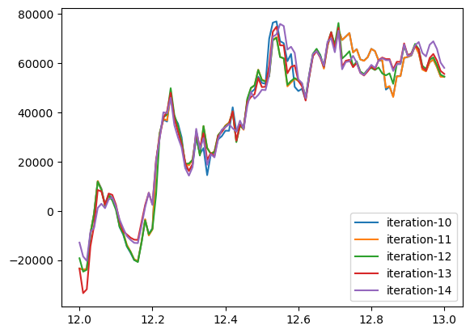
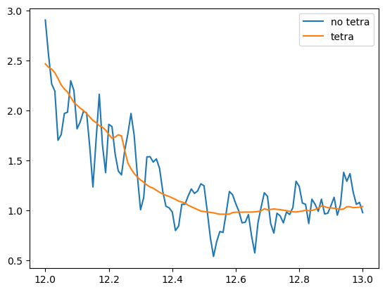

Basic tutorial: Interpolating bands, Berry curvatures, and integrating them
In this tutorial we will see how to compute band energies, Berry curvature, spins and anomalous Hall conductivity using WannierBerri code and further integrate them over the Brillouin zone to obtain Anomalous Hall conductivity, and other quantities of interest.
Preparation of a calculation:
import the needed modules
initialize a Parallel() or Serial() class
[1]:
# Preliminary
# Set environment variables - not mandatory but recommended if you use Parallel()
#import os
#os.environ['OPENBLAS_NUM_THREADS'] = '1'
#os.environ['MKL_NUM_THREADS'] = '1'
import wannierberri as wberri
print (f"Using WannierBerri version {wberri.__version__}")
import numpy as np
import scipy
import matplotlib.pyplot as plt
from termcolor import cprint
# This block is needed if you run this cell for a second time
# because one cannot initiate two parallel environments at a time
try:
parallel.shutdown()
except NameError:
pass
# Chiose one of the options:
parallel = wberri.Parallel(num_cpus=2)
#parallel = wberri.Parallel() # automatic detection
#parallel = wberri.Serial()
Using WannierBerri version 0.13.5
2023-08-12 01:49:27,095 INFO worker.py:1519 -- Started a local Ray instance. View the dashboard at 127.0.0.1:8265
Reading the system
Now we need to define the system that we are working on. Wannierberri can equally work with Wannier functions obtained by Wannier90 or other code (e.g. ASE or FPLO), as well as tight-binding models. This is done by constructing a System() class or one of its subclasses. Below, an example for Wannier90 is given; in advanced tutorials, some tight-binding models are also used.
[2]:
# Importing data from wannier90
system=wberri.System_w90(
seedname='w90_files/Fe',
berry=True, # needed to calculate "external terms" of Berry connection or curvature , reads ".mmn" file
spin = True , # needed for spin properties, reads ".spn" file
use_wcc_phase=True # include the fphase actors e^(i*k*r_a) in the Bloch basis state definition
)
generators=["Inversion","C4z","TimeReversal*C2x"]
system.set_symmetry(generators)
using fortio to read
Reading restart information from file w90_files/Fe.chk :
Time to read .chk : 0.12518978118896484
Time for MMN.__init__() : 0.4363842010498047 , read : 0.42250633239746094 , headstring 0.01387786865234375
----------
SPN
---------
using fortio to read
reading w90_files/Fe.spn : Created on 7May2022 at 16: 2:47
----------
SPN OK
---------
time for FFT_q_to_R : 0.014847517013549805 s
using ws_distance
irvec_new_all shape (89,)
using ws_dist for Ham
using ws_dist for AA
using ws_dist for SS
Number of wannier functions: 18
Number of R points: 89
Recommended size of FFT grid [4 4 4]
Real-space lattice:
[[ 1.4349963 1.4349963 1.4349963]
[-1.4349963 1.4349963 1.4349963]
[-1.4349963 -1.4349963 1.4349963]]
Interpolation on a path
[3]:
# Evaluate bands, Berry curvature, and spin along a path GHPNG
# all kpoints given in reduced coordinates
path=wberri.Path(system,
k_nodes=[
[0.0000, 0.0000, 0.0000 ], # G
[0.500 ,-0.5000, -0.5000], # H
[0.7500, 0.2500, -0.2500], # P
[0.5000, 0.0000, -0.5000], # N
[0.0000, 0.0000, 0.000 ] ] , # G
labels=["G","H","P","N","G"],
length=200 ) # length [ Ang] ~= 2*pi/dk
# uncomment some of these lines to see what path you have generated
#print (path)
#print (path.getKline())
#for K in path.get_K_list():
# print (K)
#print (np.array([K.K for K in path.get_K_list()]))
Running a calculation: calculators and results
The calculation is called using the function `run() <https://wannier-berri.org/docs/run.html>`__ :
result=wberri.run(system,
grid=path,
calculators = {"key" : calculator},
parallel = parallel,
print_Kpoints = False)
Here, apart from the already known ingredients, we need to define objects of some subclass of `Calculator <https://wannier-berri.org/docs/calculators.html#wannierberri.calculators.Calculator>`__. A Calculator is a callable object which returns some `Result <https://wannier-berri.org/docs/result.html>`__. If you code another calculator, you can calculate other things using the machinery of WannierBerri, but that is not a part of this basic tutorial.
Further, results are packed into `ResultDict <https://wannier-berri.org/docs/result.html#wannierberri.result.ResultDict>`__ and returned.
Tabulating Berry curvature and spin
To run a tabulation one needs to compose a dictionary, where keys are any arbitrary strings to label further tabulation results, and the values are subclasses of `Tabulator <https://wannier-berri.org/docs/calculators.html#wannierberri.calculators.tabulate.Tabulator>`__
Next, we pack them into another class called `TabulatorAll <https://wannier-berri.org/docs/calculators.html#wannierberri.calculators.TabulatorAll>`__, which represents a complex `Calculator <https://wannier-berri.org/docs/calculators.html#wannierberri.calculators.Calculator>`__
[4]:
tabulators = { "Energy": wberri.calculators.tabulate.Energy(),
"berry" : wberri.calculators.tabulate.BerryCurvature(),
}
tab_all_path = wberri.calculators.TabulatorAll(
tabulators,
ibands = np.arange(0,18),
mode = "path"
)
calculator not described
calculator not described
Running a calculation
Now run the calculation using the function `run() <https://wannier-berri.org/docs/run.html>`__ . This will return an object of class `ResultDict() <https://wannier-berri.org/docs/result.html#wannierberri.result.ResultDict>`__ This object contains all results of the calculations, but in this case we have only one, which is marked "tabulate"
[5]:
result=wberri.run(system,
grid=path,
calculators = {"tabulate" : tab_all_path},
parallel = parallel,
print_Kpoints = False)
print (result.results)
path_result = result.results["tabulate"]
Calculation along a path - checking calculators for compatibility
tabulate <wannierberri.calculators.TabulatorAll object at 0x7f4bd7109be0>
All calculators are compatible
Symmetrization switched off for Path
Grid is regular
The set of k points is a Path() with 215 points and labels {0: 'G', 70: 'H', 130: 'P', 165: 'N', 214: 'G'}
WARNING : symmetry is not used for a tabulation along path
generating K_list
Done
Done, sum of weights:215.0
symgroup : None
processing 215 K points : using 2 processes.
# K-points calculated Wall time (sec) Est. remaining (sec)
time for processing 215 K-points on 2 processes: 2.5064 ; per K-point 0.0117 ; proc-sec per K-point 0.0233
time1 = 0.010695457458496094
Totally processed 215 K-points
{'tabulate': <wannierberri.result.__tabresult.TABresult object at 0x7f4b4437c6d0>}
Plotting the results
The `TABresult <https://wannier-berri.org/docs/result.html#wannierberri.result.TABresult>`__ object already provides methods to plot the results. (As well as one can extract the data and plot them by other means). Below let’s plot the interpolated bands and compare with those obtained in QE. (file “bands/Fe_bands_pw.dat” is already provided)
[6]:
# plot the bands and compare with QuantumEspresso
EF = 12.6
path_result = result.results["tabulate"]
# Import the pre-computed bands from quantum espresso
A = np.loadtxt(open("bands/Fe_bands_pw.dat","r"))
bohr_ang = scipy.constants.physical_constants['Bohr radius'][0] / 1e-10
alatt = 5.4235* bohr_ang
A[:,0]*= 2*np.pi/alatt
A[:,1]-=EF
# plot it as dots
plt.scatter (A[:,0],A[:,1],s=5,label = "QE")
path_result.plot_path_fat( path,
quantity=None,
save_file="Fe_bands+QE.pdf",
Eshift=EF,
Emin=-10, Emax=50,
iband=None,
mode="fatband",
fatfactor=20,
cut_k=False,
close_fig=False,
show_fig=False,
label = "WB"
)
plt.legend()
plt.show()
plt.close()

[7]:
# plot the bands and compare with wannier90
A = np.loadtxt(open("bands/Fe_bands_w90.dat","r"))
plt.scatter (A[:,0],A[:,1],s=5,label = "W90")
path_result.plot_path_fat( path,
quantity=None,
save_file="Fe_bands+w90.pdf",
Eshift=0,
Emin=4, Emax=20,
iband=None,
mode="fatband",
fatfactor=20,
cut_k=False,
close_fig=False,
show_fig=False,
label = "WB"
)
plt.legend()
plt.show()
plt.close()
[8]:
# plot the Berry curvature
path_result.plot_path_fat( path,
quantity='berry',
component='z',
save_file="Fe_bands+berry.pdf",
Eshift=0,
Emin=4, Emax=20,
iband=None,
mode="fatband",
fatfactor=4,
cut_k=False,
close_fig=True,
show_fig=True
)
# The size of the dots corresponds to the magnitude of BC on a logarithmic scale

Problem 1:
modify the path
plot the “z” component of spin along it (without .
do not plot QE or W90 bands in this case
Hint : look here for a proper Calculator https://wannier-berri.org/docs/calculators.html#tabulating
[ ]:
# put the necessary code here
Get the data and do whatever you want
[9]:
k=path.getKline()
E=path_result.get_data(quantity='Energy',iband=(10,11))
curv=path_result.get_data(quantity='berry',iband=(10,11),component="z")
print (k.shape, E.shape, curv.shape)
(215,) (215, 2) (215, 2)
Calaculation on a 3D grid
Now let’s investigate how Berry curvature behaves in the 3D Brillouin zone. For that we need to set a grid, which can be done in several ways, see input parameters here
Most important to recall, is that in WB one sets two grids : the FFT grid and the K-grid (NKdiv). this is important for running the calculation. However, the final; result depends only on their product.
[10]:
# Set a grid
grid = wberri.Grid(system, length=50 ) # length [ Ang] ~= 2*pi/dk
#grid = wberri.Grid(system, NK=[24,24,24], NKFFT=4)
#grid = wberri.Grid(system, NKdiv=6, NKFFT=4)
determining grids from NK=None (<class 'NoneType'>), NKdiv=None (<class 'NoneType'>), NKFFT=None (<class 'NoneType'>)
length=50 was converted into NK=[25 25 25]
Minimal symmetric FFT grid : [4 4 4]
The grids were set to NKdiv=[5 5 5], NKFFT=[5 5 5], NKtot=[25 25 25]
We can use the same tabulators, but now we pack them into TabulatorAll in “grid” mode
[11]:
tabulators = { "Energy": wberri.calculators.tabulate.Energy(),
"berry" : wberri.calculators.tabulate.BerryCurvature(),
}
tab_all_grid = wberri.calculators.TabulatorAll(
tabulators,
ibands = np.arange(0,18),
mode = "grid"
)
calculator not described
calculator not described
And we run the calculation in the same way
[12]:
result=wberri.run(system,
grid=grid,
calculators = {"tabulate" : tab_all_grid},
parallel = parallel,
print_Kpoints = True)
print (result.results)
grid_result = result.results["tabulate"]
Grid is regular
The set of k points is a Grid() with NKdiv=[5 5 5], NKFFT=[5 5 5], NKtot=[25 25 25]
generating K_list
Done in 0.0013201236724853516 s
excluding symmetry-equivalent K-points from initial grid
Done in 0.011793375015258789 s
Done in 0.011821985244750977 s
K_list contains 18 Irreducible points(14.4%) out of initial 5x5x5=125 grid
Done, sum of weights:1.0000000000000004
iteration 0 - 18 points. New points are:
K-point 0 : coord in rec.lattice = [ 0.000000 , 0.000000 , 0.000000 ], refinement level:0, factor = 0.008dK=[0.2 0.2 0.2]
K-point 1 : coord in rec.lattice = [ 0.000000 , 0.200000 , 0.000000 ], refinement level:0, factor = 0.032dK=[0.2 0.2 0.2]
K-point 2 : coord in rec.lattice = [ 0.000000 , 0.400000 , 0.000000 ], refinement level:0, factor = 0.032dK=[0.2 0.2 0.2]
K-point 3 : coord in rec.lattice = [ 0.200000 , 0.000000 , 0.000000 ], refinement level:0, factor = 0.064dK=[0.2 0.2 0.2]
K-point 4 : coord in rec.lattice = [ 0.200000 , 0.200000 , 0.200000 ], refinement level:0, factor = 0.016dK=[0.2 0.2 0.2]
K-point 5 : coord in rec.lattice = [ 0.200000 , 0.600000 , 0.200000 ], refinement level:0, factor = 0.064dK=[0.2 0.2 0.2]
K-point 6 : coord in rec.lattice = [ 0.400000 , 0.000000 , 0.000000 ], refinement level:0, factor = 0.064dK=[0.2 0.2 0.2]
K-point 7 : coord in rec.lattice = [ 0.400000 , 0.200000 , 0.000000 ], refinement level:0, factor = 0.064dK=[0.2 0.2 0.2]
K-point 8 : coord in rec.lattice = [ 0.400000 , 0.200000 , 0.200000 ], refinement level:0, factor = 0.064dK=[0.2 0.2 0.2]
K-point 9 : coord in rec.lattice = [ 0.400000 , 0.400000 , 0.400000 ], refinement level:0, factor = 0.016dK=[0.2 0.2 0.2]
K-point 10 : coord in rec.lattice = [ 0.600000 , 0.200000 , 0.000000 ], refinement level:0, factor = 0.12800000000000006dK=[0.2 0.2 0.2]
K-point 11 : coord in rec.lattice = [ 0.600000 , 0.200000 , 0.200000 ], refinement level:0, factor = 0.064dK=[0.2 0.2 0.2]
K-point 12 : coord in rec.lattice = [ 0.600000 , 0.400000 , 0.200000 ], refinement level:0, factor = 0.064dK=[0.2 0.2 0.2]
K-point 13 : coord in rec.lattice = [ 0.600000 , 0.400000 , 0.400000 ], refinement level:0, factor = 0.032dK=[0.2 0.2 0.2]
K-point 14 : coord in rec.lattice = [ 0.800000 , 0.200000 , 0.000000 ], refinement level:0, factor = 0.12800000000000006dK=[0.2 0.2 0.2]
K-point 15 : coord in rec.lattice = [ 0.800000 , 0.200000 , 0.200000 ], refinement level:0, factor = 0.032dK=[0.2 0.2 0.2]
K-point 16 : coord in rec.lattice = [ 0.800000 , 0.400000 , 0.000000 ], refinement level:0, factor = 0.064dK=[0.2 0.2 0.2]
K-point 17 : coord in rec.lattice = [ 0.800000 , 0.400000 , 0.200000 ], refinement level:0, factor = 0.064dK=[0.2 0.2 0.2]
symgroup : <wannierberri.symmetry.Group object at 0x7f4bd7171280>
processing 18 K points : using 2 processes.
# K-points calculated Wall time (sec) Est. remaining (sec)
time for processing 18 K-points on 2 processes: 3.6385 ; per K-point 0.2021 ; proc-sec per K-point 0.4043
time1 = 0.010234594345092773
setting the grid
setting new kpoints
finding equivalent kpoints
collecting
collecting: to_grid : 0.12698626518249512
collecting: TABresult : 0.0003905296325683594
collecting - OK : 0.12739229202270508 (1.5497207641601562e-05)
using a pool of 8 processes to write txt frmsf of 35157 points per process
using a pool of 8 processes to write txt frmsf of 35157 points per process
using a pool of 8 processes to write txt frmsf of 35157 points per process
using a pool of 8 processes to write txt frmsf of 35157 points per process
using a pool of 8 processes to write txt frmsf of 35157 points per process
using a pool of 8 processes to write txt frmsf of 35157 points per process
using a pool of 8 processes to write txt frmsf of 35157 points per process
using a pool of 8 processes to write txt frmsf of 35157 points per process
using a pool of 8 processes to write txt frmsf of 35157 points per process
Totally processed 18 K-points
{'tabulate': <wannierberri.result.__tabresult.TABresult object at 0x7f4a306ad580>}
[13]:
# Now we got some .frmsf files
!ls -al *.frmsf
#!rm *.frmsf
-rw-rw-r-- 1 stepan stepan 6593488 Aug 12 01:50 result-tabulate_berry-x.frmsf
-rw-rw-r-- 1 stepan stepan 6593424 Aug 12 01:50 result-tabulate_berry-y.frmsf
-rw-rw-r-- 1 stepan stepan 6595943 Aug 12 01:50 result-tabulate_berry-z.frmsf
-rw-rw-r-- 1 stepan stepan 3335355 Aug 12 01:50 result-tabulate_E.frmsf
-rw-rw-r-- 1 stepan stepan 6670549 Aug 12 01:50 result-tabulate_Energy-.frmsf
[14]:
# let's look at them using the Fermisurfer! (https://fermisurfer.osdn.jp/)
!fermisurfer Fe_berry_z.frmsf
^C
Analyze the tabulated data
[15]:
# You may get the data as numpy arrays via:
Energy = grid_result.get_data(iband=5, quantity='Energy')
berry = grid_result.get_data(iband=5, quantity='berry',component='z')
print(berry.shape,Energy.shape)
(25, 25, 25) (25, 25, 25)
Problem 2 :
fill the missing parts and evaluate the Berry curvature summed over all states below EF = 12.6 eV. Plot in on a plane k3=const (in reduced coordinates)
[16]:
# example : find the total Berry curvature of occupied states
# on the plane (k1,k2), k3=const (in reduced coordinates)
Berry_occ = 0
k3 = 9
EF=12.4
for ib in range(18):
Energy =
berry =
berry [Energy>EF] = 0
Berry_occ += berry
plt.contour(Energy,levels = [EF],linewidths=0.5,colors='black')
shw = plt.imshow(Berry_occ,vmin=-10,vmax=10,cmap="jet")
bar = plt.colorbar(shw)
File "/tmp/ipykernel_53607/4197978614.py", line 7
Energy =
^
SyntaxError: invalid syntax
Integration on a grid: anomalous Hall conductivity
Now, after we saw that the Berry curvature changes rapidly in the k-space, we understand that to get the precise value of AHC (\ref{eq:ahc}) defined as a Fermi-sea integral of Berry curvature
\begin{equation} \sigma^{\rm AHC}_{xy} = -\frac{e^2}{\hbar} \sum_n^{\rm occ} \int\frac{d\mathbf{k}}{(2\pi)^3} \Omega^n_\gamma \label{eq:ahc}\tag{1} \end{equation}
we need a very dense grid. The calculation is done again, by using the calculators. AHC may be viewed as a function of the Fermi level. Such calculators are called StaticCalculator , because the corresponding effects can be measured in static fields. (as opposed to dynamic calculators, see below).
[17]:
calculators = {}
Efermi = np.linspace(12,13,101)
omega = np.linspace(0,1.,101)
# Set a grid
grid = wberri.Grid(system, length=50 ) # length [ Ang] ~= 2*pi/dk
calculators ["ahc"] = wberri.calculators.static.AHC(Efermi=Efermi)
result_run = wberri.run(system,
grid=grid,
calculators = calculators,
parallel=parallel,
adpt_num_iter=5,
fout_name='Fe',
restart=False,
file_Klist="Klist_ahc.pickle" # needed to restart a calculation in future
)
determining grids from NK=None (<class 'NoneType'>), NKdiv=None (<class 'NoneType'>), NKFFT=None (<class 'NoneType'>)
length=50 was converted into NK=[25 25 25]
Minimal symmetric FFT grid : [4 4 4]
The grids were set to NKdiv=[5 5 5], NKFFT=[5 5 5], NKtot=[25 25 25]
Anomalous Hall conductivity (:math:`s^3 \cdot A^2 / (kg \cdot m^3) = S/m`)
| With Fermi sea integral Eq(11) in `Ref <https://www.nature.com/articles/s41524-021-00498-5>`_
| Output: :math:`O = -e^2/\hbar \int [dk] \Omega f`
| Instruction: :math:`j_\alpha = \sigma_{\alpha\beta} E_\beta = \epsilon_{\alpha\beta\delta} O_\delta E_\beta`
Grid is regular
The set of k points is a Grid() with NKdiv=[5 5 5], NKFFT=[5 5 5], NKtot=[25 25 25]
generating K_list
Done in 0.0013718605041503906 s
excluding symmetry-equivalent K-points from initial grid
Done in 0.010600090026855469 s
Done in 0.010636329650878906 s
K_list contains 18 Irreducible points(14.4%) out of initial 5x5x5=125 grid
Done, sum of weights:1.0000000000000004
iteration 0 - 18 points. New points are:
K-point 0 : coord in rec.lattice = [ 0.000000 , 0.000000 , 0.000000 ], refinement level:0, factor = 0.008dK=[0.2 0.2 0.2]
K-point 1 : coord in rec.lattice = [ 0.000000 , 0.200000 , 0.000000 ], refinement level:0, factor = 0.032dK=[0.2 0.2 0.2]
K-point 2 : coord in rec.lattice = [ 0.000000 , 0.400000 , 0.000000 ], refinement level:0, factor = 0.032dK=[0.2 0.2 0.2]
K-point 3 : coord in rec.lattice = [ 0.200000 , 0.000000 , 0.000000 ], refinement level:0, factor = 0.064dK=[0.2 0.2 0.2]
K-point 4 : coord in rec.lattice = [ 0.200000 , 0.200000 , 0.200000 ], refinement level:0, factor = 0.016dK=[0.2 0.2 0.2]
K-point 5 : coord in rec.lattice = [ 0.200000 , 0.600000 , 0.200000 ], refinement level:0, factor = 0.064dK=[0.2 0.2 0.2]
K-point 6 : coord in rec.lattice = [ 0.400000 , 0.000000 , 0.000000 ], refinement level:0, factor = 0.064dK=[0.2 0.2 0.2]
K-point 7 : coord in rec.lattice = [ 0.400000 , 0.200000 , 0.000000 ], refinement level:0, factor = 0.064dK=[0.2 0.2 0.2]
K-point 8 : coord in rec.lattice = [ 0.400000 , 0.200000 , 0.200000 ], refinement level:0, factor = 0.064dK=[0.2 0.2 0.2]
K-point 9 : coord in rec.lattice = [ 0.400000 , 0.400000 , 0.400000 ], refinement level:0, factor = 0.016dK=[0.2 0.2 0.2]
K-point 10 : coord in rec.lattice = [ 0.600000 , 0.200000 , 0.000000 ], refinement level:0, factor = 0.12800000000000006dK=[0.2 0.2 0.2]
K-point 11 : coord in rec.lattice = [ 0.600000 , 0.200000 , 0.200000 ], refinement level:0, factor = 0.064dK=[0.2 0.2 0.2]
K-point 12 : coord in rec.lattice = [ 0.600000 , 0.400000 , 0.200000 ], refinement level:0, factor = 0.064dK=[0.2 0.2 0.2]
K-point 13 : coord in rec.lattice = [ 0.600000 , 0.400000 , 0.400000 ], refinement level:0, factor = 0.032dK=[0.2 0.2 0.2]
K-point 14 : coord in rec.lattice = [ 0.800000 , 0.200000 , 0.000000 ], refinement level:0, factor = 0.12800000000000006dK=[0.2 0.2 0.2]
K-point 15 : coord in rec.lattice = [ 0.800000 , 0.200000 , 0.200000 ], refinement level:0, factor = 0.032dK=[0.2 0.2 0.2]
K-point 16 : coord in rec.lattice = [ 0.800000 , 0.400000 , 0.000000 ], refinement level:0, factor = 0.064dK=[0.2 0.2 0.2]
K-point 17 : coord in rec.lattice = [ 0.800000 , 0.400000 , 0.200000 ], refinement level:0, factor = 0.064dK=[0.2 0.2 0.2]
symgroup : <wannierberri.symmetry.Group object at 0x7f4bd7171280>
processing 18 K points : using 2 processes.
# K-points calculated Wall time (sec) Est. remaining (sec)
time for processing 18 K-points on 2 processes: 0.8540 ; per K-point 0.0474 ; proc-sec per K-point 0.0949
time1 = 0.0006709098815917969
time2 = 0.002856016159057617
exclude dbg 1 6 [ 0.35 -0.05 0.05] [ 0.45 0.05 -0.05] 8 8
checking for equivalent points in all points (of new 7 points)
excluded 0 points
sum of weights now :1.0000000000000004
Writing file_Klist_factor_changed to Klist_ahc.changed_factors.txt
iteration 1 - 7 points. New points are:
K-point 18 : coord in rec.lattice = [ 0.350000 , -0.050000 , -0.050000 ], refinement level:1, factor = 0.008dK=[0.1 0.1 0.1]
K-point 19 : coord in rec.lattice = [ 0.350000 , -0.050000 , 0.050000 ], refinement level:1, factor = 0.016dK=[0.1 0.1 0.1]
K-point 20 : coord in rec.lattice = [ 0.350000 , 0.050000 , -0.050000 ], refinement level:1, factor = 0.008dK=[0.1 0.1 0.1]
K-point 21 : coord in rec.lattice = [ 0.350000 , 0.050000 , 0.050000 ], refinement level:1, factor = 0.008dK=[0.1 0.1 0.1]
K-point 22 : coord in rec.lattice = [ 0.450000 , -0.050000 , -0.050000 ], refinement level:1, factor = 0.008dK=[0.1 0.1 0.1]
K-point 23 : coord in rec.lattice = [ 0.450000 , -0.050000 , 0.050000 ], refinement level:1, factor = 0.008dK=[0.1 0.1 0.1]
K-point 24 : coord in rec.lattice = [ 0.450000 , 0.050000 , 0.050000 ], refinement level:1, factor = 0.008dK=[0.1 0.1 0.1]
symgroup : <wannierberri.symmetry.Group object at 0x7f4bd7171280>
processing 7 K points : using 2 processes.
# K-points calculated Wall time (sec) Est. remaining (sec)
time for processing 7 K-points on 2 processes: 0.4475 ; per K-point 0.0639 ; proc-sec per K-point 0.1279
time1 = 0.0003707408905029297
time2 = 0.002228975296020508
exclude dbg 1 4 [0.15 0.55 0.25] [0.25 0.55 0.15] 8 8
exclude dbg 3 6 [0.15 0.65 0.25] [0.25 0.65 0.15] 8 8
checking for equivalent points in all points (of new 6 points)
excluded 0 points
sum of weights now :1.0000000000000004
Writing file_Klist_factor_changed to Klist_ahc.changed_factors.txt
iteration 2 - 6 points. New points are:
K-point 25 : coord in rec.lattice = [ 0.150000 , 0.550000 , 0.150000 ], refinement level:1, factor = 0.008dK=[0.1 0.1 0.1]
K-point 26 : coord in rec.lattice = [ 0.150000 , 0.550000 , 0.250000 ], refinement level:1, factor = 0.016dK=[0.1 0.1 0.1]
K-point 27 : coord in rec.lattice = [ 0.150000 , 0.650000 , 0.150000 ], refinement level:1, factor = 0.008dK=[0.1 0.1 0.1]
K-point 28 : coord in rec.lattice = [ 0.150000 , 0.650000 , 0.250000 ], refinement level:1, factor = 0.016dK=[0.1 0.1 0.1]
K-point 29 : coord in rec.lattice = [ 0.250000 , 0.550000 , 0.250000 ], refinement level:1, factor = 0.008dK=[0.1 0.1 0.1]
K-point 30 : coord in rec.lattice = [ 0.250000 , 0.650000 , 0.250000 ], refinement level:1, factor = 0.008dK=[0.1 0.1 0.1]
symgroup : <wannierberri.symmetry.Group object at 0x7f4bd7171280>
processing 6 K points : using 2 processes.
# K-points calculated Wall time (sec) Est. remaining (sec)
time for processing 6 K-points on 2 processes: 0.2754 ; per K-point 0.0459 ; proc-sec per K-point 0.0918
time1 = 0.0004076957702636719
time2 = 0.0023136138916015625
exclude dbg 0 7 [0.55 0.35 0.35] [0.65 0.45 0.45] 8 8
exclude dbg 1 6 [0.55 0.35 0.45] [0.65 0.45 0.35] 8 8
checking for equivalent points in all points (of new 6 points)
excluded 0 points
sum of weights now :1.0000000000000004
Writing file_Klist_factor_changed to Klist_ahc.changed_factors.txt
iteration 3 - 6 points. New points are:
K-point 31 : coord in rec.lattice = [ 0.550000 , 0.350000 , 0.350000 ], refinement level:1, factor = 0.008dK=[0.1 0.1 0.1]
K-point 32 : coord in rec.lattice = [ 0.550000 , 0.350000 , 0.450000 ], refinement level:1, factor = 0.008dK=[0.1 0.1 0.1]
K-point 33 : coord in rec.lattice = [ 0.550000 , 0.450000 , 0.350000 ], refinement level:1, factor = 0.004dK=[0.1 0.1 0.1]
K-point 34 : coord in rec.lattice = [ 0.550000 , 0.450000 , 0.450000 ], refinement level:1, factor = 0.004dK=[0.1 0.1 0.1]
K-point 35 : coord in rec.lattice = [ 0.650000 , 0.350000 , 0.350000 ], refinement level:1, factor = 0.004dK=[0.1 0.1 0.1]
K-point 36 : coord in rec.lattice = [ 0.650000 , 0.350000 , 0.450000 ], refinement level:1, factor = 0.004dK=[0.1 0.1 0.1]
symgroup : <wannierberri.symmetry.Group object at 0x7f4bd7171280>
processing 6 K points : using 2 processes.
# K-points calculated Wall time (sec) Est. remaining (sec)
time for processing 6 K-points on 2 processes: 0.2541 ; per K-point 0.0423 ; proc-sec per K-point 0.0847
time1 = 0.00038886070251464844
time2 = 0.0036749839782714844
exclude dbg 1 3 [0.35 0.35 0.45] [0.35 0.45 0.45] 8 8
exclude dbg 1 4 [0.35 0.35 0.45] [0.45 0.35 0.35] 8 8
exclude dbg 1 6 [0.35 0.35 0.45] [0.45 0.45 0.35] 8 8
checking for equivalent points in all points (of new 5 points)
exclude dbg 33 40 [0.55 0.45 0.35] [0.45 0.35 0.45] 42 5
excluded 1 points
sum of weights now :1.0000000000000004
Writing file_Klist_factor_changed to Klist_ahc.changed_factors.txt
iteration 4 - 4 points. New points are:
K-point 37 : coord in rec.lattice = [ 0.350000 , 0.350000 , 0.350000 ], refinement level:1, factor = 0.002dK=[0.1 0.1 0.1]
K-point 38 : coord in rec.lattice = [ 0.350000 , 0.350000 , 0.450000 ], refinement level:1, factor = 0.008dK=[0.1 0.1 0.1]
K-point 39 : coord in rec.lattice = [ 0.350000 , 0.450000 , 0.350000 ], refinement level:1, factor = 0.002dK=[0.1 0.1 0.1]
K-point 40 : coord in rec.lattice = [ 0.450000 , 0.450000 , 0.450000 ], refinement level:1, factor = 0.002dK=[0.1 0.1 0.1]
symgroup : <wannierberri.symmetry.Group object at 0x7f4bd7171280>
processing 4 K points : using 2 processes.
# K-points calculated Wall time (sec) Est. remaining (sec)
time for processing 4 K-points on 2 processes: 0.1799 ; per K-point 0.0450 ; proc-sec per K-point 0.0900
time1 = 0.0002524852752685547
time2 = 0.002492189407348633
exclude dbg 1 3 [0.425 0.425 0.475] [0.425 0.475 0.475] 8 8
exclude dbg 1 4 [0.425 0.425 0.475] [0.475 0.425 0.425] 8 8
exclude dbg 1 6 [0.425 0.425 0.475] [0.475 0.475 0.425] 8 8
exclude dbg 1 6 [ 0.15 -0.05 0.05] [ 0.25 0.05 -0.05] 8 8
checking for equivalent points in all points (of new 12 points)
exclude dbg 20 51 [ 0.35 0.05 -0.05] [ 0.25 -0.05 0.05] 53 12
excluded 1 points
sum of weights now :1.0000000000000002
Writing file_Klist_factor_changed to Klist_ahc.changed_factors.txt
iteration 5 - 11 points. New points are:
K-point 41 : coord in rec.lattice = [ 0.425000 , 0.425000 , 0.425000 ], refinement level:2, factor = 0.00025dK=[0.05 0.05 0.05]
K-point 42 : coord in rec.lattice = [ 0.425000 , 0.425000 , 0.475000 ], refinement level:2, factor = 0.001dK=[0.05 0.05 0.05]
K-point 43 : coord in rec.lattice = [ 0.425000 , 0.475000 , 0.425000 ], refinement level:2, factor = 0.00025dK=[0.05 0.05 0.05]
K-point 44 : coord in rec.lattice = [ 0.475000 , 0.425000 , 0.475000 ], refinement level:2, factor = 0.00025dK=[0.05 0.05 0.05]
K-point 45 : coord in rec.lattice = [ 0.475000 , 0.475000 , 0.475000 ], refinement level:2, factor = 0.00025dK=[0.05 0.05 0.05]
K-point 46 : coord in rec.lattice = [ 0.150000 , -0.050000 , -0.050000 ], refinement level:1, factor = 0.008dK=[0.1 0.1 0.1]
K-point 47 : coord in rec.lattice = [ 0.150000 , -0.050000 , 0.050000 ], refinement level:1, factor = 0.016dK=[0.1 0.1 0.1]
K-point 48 : coord in rec.lattice = [ 0.150000 , 0.050000 , -0.050000 ], refinement level:1, factor = 0.008dK=[0.1 0.1 0.1]
K-point 49 : coord in rec.lattice = [ 0.150000 , 0.050000 , 0.050000 ], refinement level:1, factor = 0.008dK=[0.1 0.1 0.1]
K-point 50 : coord in rec.lattice = [ 0.250000 , -0.050000 , -0.050000 ], refinement level:1, factor = 0.008dK=[0.1 0.1 0.1]
K-point 51 : coord in rec.lattice = [ 0.250000 , 0.050000 , 0.050000 ], refinement level:1, factor = 0.008dK=[0.1 0.1 0.1]
symgroup : <wannierberri.symmetry.Group object at 0x7f4bd7171280>
processing 11 K points : using 2 processes.
# K-points calculated Wall time (sec) Est. remaining (sec)
time for processing 11 K-points on 2 processes: 0.5946 ; per K-point 0.0541 ; proc-sec per K-point 0.1081
time1 = 0.0004673004150390625
Totally processed 52 K-points
[18]:
!ls
bands Fe_bands+berry.pdf
Fe-ahc_iter-0000.dat Fe_bands+QE.pdf
Fe-ahc_iter-0000.npz Fe_bands+w90.pdf
Fe-ahc_iter-0001.dat input
Fe-ahc_iter-0001.npz Klist_ahc.changed_factors.txt
Fe-ahc_iter-0002.dat Klist_ahc.pickle
Fe-ahc_iter-0002.npz result-tabulate_berry-x.frmsf
Fe-ahc_iter-0003.dat result-tabulate_berry-y.frmsf
Fe-ahc_iter-0003.npz result-tabulate_berry-z.frmsf
Fe-ahc_iter-0004.dat result-tabulate_E.frmsf
Fe-ahc_iter-0004.npz result-tabulate_Energy-.frmsf
Fe-ahc_iter-0005.dat tutorial-wb-basic.ipynb
Fe-ahc_iter-0005.npz w90_files
[19]:
#plot results from different iterations
for i in range(5):
a = np.loadtxt(f"Fe-ahc_iter-{i:04d}.dat")
plt.plot(a[:,0],a[:,3],label = f"iteration-{i}")
#plt.ylim(-1000,1000)
plt.legend()
plt.show()

[20]:
result_run = wberri.run(system,
grid=grid,
calculators = calculators,
parallel=parallel,
adpt_num_iter=10,
fout_name='Fe',
restart=True,
file_Klist="Klist_ahc.pickle" # needed to restart a calculation
)
Grid is regular
The set of k points is a Grid() with NKdiv=[5 5 5], NKFFT=[5 5 5], NKtot=[25 25 25]
Finished reading Klist from file Klist_ahc.pickle
52 K-points were read from Klist_ahc.pickle
8 K-points were read from Klist_ahc.changed_factors.txt
searching for start_iter
start_iter = 5
iteration 5 - 0 points. New points are:
symgroup : <wannierberri.symmetry.Group object at 0x7f4bd7171280>
nothing to process now
time1 = 0.0032553672790527344
time2 = 0.0018982887268066406
exclude dbg 1 6 [0.35 0.15 0.25] [0.45 0.25 0.15] 8 8
checking for equivalent points in all points (of new 7 points)
excluded 0 points
sum of weights now :1.0000000000000002
Writing file_Klist_factor_changed to Klist_ahc.changed_factors.txt
iteration 6 - 7 points. New points are:
K-point 52 : coord in rec.lattice = [ 0.350000 , 0.150000 , 0.150000 ], refinement level:1, factor = 0.008dK=[0.1 0.1 0.1]
K-point 53 : coord in rec.lattice = [ 0.350000 , 0.150000 , 0.250000 ], refinement level:1, factor = 0.016dK=[0.1 0.1 0.1]
K-point 54 : coord in rec.lattice = [ 0.350000 , 0.250000 , 0.150000 ], refinement level:1, factor = 0.008dK=[0.1 0.1 0.1]
K-point 55 : coord in rec.lattice = [ 0.350000 , 0.250000 , 0.250000 ], refinement level:1, factor = 0.008dK=[0.1 0.1 0.1]
K-point 56 : coord in rec.lattice = [ 0.450000 , 0.150000 , 0.150000 ], refinement level:1, factor = 0.008dK=[0.1 0.1 0.1]
K-point 57 : coord in rec.lattice = [ 0.450000 , 0.150000 , 0.250000 ], refinement level:1, factor = 0.008dK=[0.1 0.1 0.1]
K-point 58 : coord in rec.lattice = [ 0.450000 , 0.250000 , 0.250000 ], refinement level:1, factor = 0.008dK=[0.1 0.1 0.1]
symgroup : <wannierberri.symmetry.Group object at 0x7f4bd7171280>
processing 7 K points : using 2 processes.
# K-points calculated Wall time (sec) Est. remaining (sec)
time for processing 7 K-points on 2 processes: 0.3608 ; per K-point 0.0515 ; proc-sec per K-point 0.1031
time1 = 0.0005626678466796875
time2 = 0.0028181076049804688
exclude dbg 4 6 [0.65 0.35 0.15] [0.65 0.45 0.15] 8 8
exclude dbg 1 3 [0.55 0.35 0.25] [0.55 0.45 0.25] 8 8
checking for equivalent points in all points (of new 14 points)
exclude dbg 29 61 [0.25 0.55 0.25] [ 0.55 0.25 -0.05] 73 14
exclude dbg 36 71 [0.65 0.35 0.45] [0.65 0.35 0.25] 73 14
exclude dbg 57 69 [0.45 0.15 0.25] [0.55 0.45 0.15] 73 14
excluded 3 points
sum of weights now :1.0000000000000004
Writing file_Klist_factor_changed to Klist_ahc.changed_factors.txt
iteration 7 - 11 points. New points are:
K-point 59 : coord in rec.lattice = [ 0.550000 , 0.150000 , -0.050000 ], refinement level:1, factor = 0.016000000000000007dK=[0.1 0.1 0.1]
K-point 60 : coord in rec.lattice = [ 0.550000 , 0.150000 , 0.050000 ], refinement level:1, factor = 0.016000000000000007dK=[0.1 0.1 0.1]
K-point 61 : coord in rec.lattice = [ 0.550000 , 0.250000 , 0.050000 ], refinement level:1, factor = 0.016000000000000007dK=[0.1 0.1 0.1]
K-point 62 : coord in rec.lattice = [ 0.650000 , 0.150000 , -0.050000 ], refinement level:1, factor = 0.016000000000000007dK=[0.1 0.1 0.1]
K-point 63 : coord in rec.lattice = [ 0.650000 , 0.150000 , 0.050000 ], refinement level:1, factor = 0.016000000000000007dK=[0.1 0.1 0.1]
K-point 64 : coord in rec.lattice = [ 0.650000 , 0.250000 , -0.050000 ], refinement level:1, factor = 0.016000000000000007dK=[0.1 0.1 0.1]
K-point 65 : coord in rec.lattice = [ 0.650000 , 0.250000 , 0.050000 ], refinement level:1, factor = 0.016000000000000007dK=[0.1 0.1 0.1]
K-point 66 : coord in rec.lattice = [ 0.550000 , 0.350000 , 0.150000 ], refinement level:1, factor = 0.008dK=[0.1 0.1 0.1]
K-point 67 : coord in rec.lattice = [ 0.550000 , 0.350000 , 0.250000 ], refinement level:1, factor = 0.016dK=[0.1 0.1 0.1]
K-point 68 : coord in rec.lattice = [ 0.650000 , 0.350000 , 0.150000 ], refinement level:1, factor = 0.016dK=[0.1 0.1 0.1]
K-point 69 : coord in rec.lattice = [ 0.650000 , 0.450000 , 0.250000 ], refinement level:1, factor = 0.008dK=[0.1 0.1 0.1]
symgroup : <wannierberri.symmetry.Group object at 0x7f4bd7171280>
processing 11 K points : using 2 processes.
# K-points calculated Wall time (sec) Est. remaining (sec)
time for processing 11 K-points on 2 processes: 0.5981 ; per K-point 0.0544 ; proc-sec per K-point 0.1088
time1 = 0.0006985664367675781
time2 = 0.0032088756561279297
exclude dbg 1 6 [0.425 0.025 0.075] [0.475 0.075 0.025] 8 8
checking for equivalent points in all points (of new 15 points)
excluded 0 points
sum of weights now :1.0000000000000004
Writing file_Klist_factor_changed to Klist_ahc.changed_factors.txt
iteration 8 - 15 points. New points are:
K-point 70 : coord in rec.lattice = [ 0.425000 , 0.025000 , 0.025000 ], refinement level:2, factor = 0.001dK=[0.05 0.05 0.05]
K-point 71 : coord in rec.lattice = [ 0.425000 , 0.025000 , 0.075000 ], refinement level:2, factor = 0.002dK=[0.05 0.05 0.05]
K-point 72 : coord in rec.lattice = [ 0.425000 , 0.075000 , 0.025000 ], refinement level:2, factor = 0.001dK=[0.05 0.05 0.05]
K-point 73 : coord in rec.lattice = [ 0.425000 , 0.075000 , 0.075000 ], refinement level:2, factor = 0.001dK=[0.05 0.05 0.05]
K-point 74 : coord in rec.lattice = [ 0.475000 , 0.025000 , 0.025000 ], refinement level:2, factor = 0.001dK=[0.05 0.05 0.05]
K-point 75 : coord in rec.lattice = [ 0.475000 , 0.025000 , 0.075000 ], refinement level:2, factor = 0.001dK=[0.05 0.05 0.05]
K-point 76 : coord in rec.lattice = [ 0.475000 , 0.075000 , 0.075000 ], refinement level:2, factor = 0.001dK=[0.05 0.05 0.05]
K-point 77 : coord in rec.lattice = [ 0.750000 , 0.150000 , -0.050000 ], refinement level:1, factor = 0.016000000000000007dK=[0.1 0.1 0.1]
K-point 78 : coord in rec.lattice = [ 0.750000 , 0.150000 , 0.050000 ], refinement level:1, factor = 0.016000000000000007dK=[0.1 0.1 0.1]
K-point 79 : coord in rec.lattice = [ 0.750000 , 0.250000 , -0.050000 ], refinement level:1, factor = 0.016000000000000007dK=[0.1 0.1 0.1]
K-point 80 : coord in rec.lattice = [ 0.750000 , 0.250000 , 0.050000 ], refinement level:1, factor = 0.016000000000000007dK=[0.1 0.1 0.1]
K-point 81 : coord in rec.lattice = [ 0.850000 , 0.150000 , -0.050000 ], refinement level:1, factor = 0.016000000000000007dK=[0.1 0.1 0.1]
K-point 82 : coord in rec.lattice = [ 0.850000 , 0.150000 , 0.050000 ], refinement level:1, factor = 0.016000000000000007dK=[0.1 0.1 0.1]
K-point 83 : coord in rec.lattice = [ 0.850000 , 0.250000 , -0.050000 ], refinement level:1, factor = 0.016000000000000007dK=[0.1 0.1 0.1]
K-point 84 : coord in rec.lattice = [ 0.850000 , 0.250000 , 0.050000 ], refinement level:1, factor = 0.016000000000000007dK=[0.1 0.1 0.1]
symgroup : <wannierberri.symmetry.Group object at 0x7f4bd7171280>
processing 15 K points : using 2 processes.
# K-points calculated Wall time (sec) Est. remaining (sec)
time for processing 15 K-points on 2 processes: 0.7841 ; per K-point 0.0523 ; proc-sec per K-point 0.1045
time1 = 0.0008895397186279297
time2 = 0.002882242202758789
exclude dbg 1 4 [-0.05 0.35 0.05] [ 0.05 0.35 -0.05] 8 8
exclude dbg 0 7 [-0.05 0.35 -0.05] [0.05 0.45 0.05] 8 8
exclude dbg 3 6 [-0.05 0.45 0.05] [ 0.05 0.45 -0.05] 8 8
exclude dbg 3 4 [0.4125 0.4375 0.4875] [0.4375 0.4125 0.4625] 8 8
exclude dbg 1 6 [0.55 0.15 0.25] [0.65 0.25 0.15] 8 8
checking for equivalent points in all points (of new 19 points)
exclude dbg 57 99 [0.45 0.15 0.25] [0.55 0.25 0.15] 104 19
excluded 1 points
sum of weights now :1.0000000000000007
Writing file_Klist_factor_changed to Klist_ahc.changed_factors.txt
iteration 9 - 18 points. New points are:
K-point 85 : coord in rec.lattice = [ -0.050000 , 0.350000 , -0.050000 ], refinement level:1, factor = 0.008dK=[0.1 0.1 0.1]
K-point 86 : coord in rec.lattice = [ -0.050000 , 0.350000 , 0.050000 ], refinement level:1, factor = 0.008dK=[0.1 0.1 0.1]
K-point 87 : coord in rec.lattice = [ -0.050000 , 0.450000 , -0.050000 ], refinement level:1, factor = 0.004dK=[0.1 0.1 0.1]
K-point 88 : coord in rec.lattice = [ -0.050000 , 0.450000 , 0.050000 ], refinement level:1, factor = 0.008dK=[0.1 0.1 0.1]
K-point 89 : coord in rec.lattice = [ 0.050000 , 0.350000 , 0.050000 ], refinement level:1, factor = 0.004dK=[0.1 0.1 0.1]
K-point 90 : coord in rec.lattice = [ 0.412500 , 0.412500 , 0.462500 ], refinement level:3, factor = 0.000125dK=[0.025 0.025 0.025]
K-point 91 : coord in rec.lattice = [ 0.412500 , 0.412500 , 0.487500 ], refinement level:3, factor = 0.000125dK=[0.025 0.025 0.025]
K-point 92 : coord in rec.lattice = [ 0.412500 , 0.437500 , 0.462500 ], refinement level:3, factor = 0.000125dK=[0.025 0.025 0.025]
K-point 93 : coord in rec.lattice = [ 0.412500 , 0.437500 , 0.487500 ], refinement level:3, factor = 0.00025dK=[0.025 0.025 0.025]
K-point 94 : coord in rec.lattice = [ 0.437500 , 0.412500 , 0.487500 ], refinement level:3, factor = 0.000125dK=[0.025 0.025 0.025]
K-point 95 : coord in rec.lattice = [ 0.437500 , 0.437500 , 0.462500 ], refinement level:3, factor = 0.000125dK=[0.025 0.025 0.025]
K-point 96 : coord in rec.lattice = [ 0.437500 , 0.437500 , 0.487500 ], refinement level:3, factor = 0.000125dK=[0.025 0.025 0.025]
K-point 97 : coord in rec.lattice = [ 0.550000 , 0.150000 , 0.150000 ], refinement level:1, factor = 0.008dK=[0.1 0.1 0.1]
K-point 98 : coord in rec.lattice = [ 0.550000 , 0.150000 , 0.250000 ], refinement level:1, factor = 0.016dK=[0.1 0.1 0.1]
K-point 99 : coord in rec.lattice = [ 0.550000 , 0.250000 , 0.250000 ], refinement level:1, factor = 0.008dK=[0.1 0.1 0.1]
K-point 100 : coord in rec.lattice = [ 0.650000 , 0.150000 , 0.150000 ], refinement level:1, factor = 0.008dK=[0.1 0.1 0.1]
K-point 101 : coord in rec.lattice = [ 0.650000 , 0.150000 , 0.250000 ], refinement level:1, factor = 0.008dK=[0.1 0.1 0.1]
K-point 102 : coord in rec.lattice = [ 0.650000 , 0.250000 , 0.250000 ], refinement level:1, factor = 0.008dK=[0.1 0.1 0.1]
symgroup : <wannierberri.symmetry.Group object at 0x7f4bd7171280>
processing 18 K points : using 2 processes.
# K-points calculated Wall time (sec) Est. remaining (sec)
time for processing 18 K-points on 2 processes: 0.8501 ; per K-point 0.0472 ; proc-sec per K-point 0.0945
time1 = 0.0007834434509277344
time2 = 0.0028030872344970703
exclude dbg 4 6 [ 0.85 0.35 -0.05] [ 0.85 0.45 -0.05] 8 8
exclude dbg 1 3 [0.75 0.35 0.05] [0.75 0.45 0.05] 8 8
exclude dbg 1 4 [-0.05 0.15 0.05] [ 0.05 0.15 -0.05] 8 8
exclude dbg 0 7 [-0.05 0.15 -0.05] [0.05 0.25 0.05] 8 8
exclude dbg 3 6 [-0.05 0.25 0.05] [ 0.05 0.25 -0.05] 8 8
checking for equivalent points in all points (of new 11 points)
exclude dbg 48 113 [ 0.15 0.05 -0.05] [0.05 0.15 0.05] 114 11
exclude dbg 89 111 [0.05 0.35 0.05] [-0.05 0.25 -0.05] 114 11
exclude dbg 79 105 [ 0.75 0.25 -0.05] [ 0.75 0.45 -0.05] 114 11
excluded 3 points
sum of weights now :1.0000000000000007
Writing file_Klist_factor_changed to Klist_ahc.changed_factors.txt
iteration 10 - 8 points. New points are:
K-point 103 : coord in rec.lattice = [ 0.750000 , 0.350000 , -0.050000 ], refinement level:1, factor = 0.008dK=[0.1 0.1 0.1]
K-point 104 : coord in rec.lattice = [ 0.750000 , 0.350000 , 0.050000 ], refinement level:1, factor = 0.016dK=[0.1 0.1 0.1]
K-point 105 : coord in rec.lattice = [ 0.850000 , 0.350000 , -0.050000 ], refinement level:1, factor = 0.016dK=[0.1 0.1 0.1]
K-point 106 : coord in rec.lattice = [ 0.850000 , 0.350000 , 0.050000 ], refinement level:1, factor = 0.008dK=[0.1 0.1 0.1]
K-point 107 : coord in rec.lattice = [ 0.850000 , 0.450000 , 0.050000 ], refinement level:1, factor = 0.008dK=[0.1 0.1 0.1]
K-point 108 : coord in rec.lattice = [ -0.050000 , 0.150000 , -0.050000 ], refinement level:1, factor = 0.008dK=[0.1 0.1 0.1]
K-point 109 : coord in rec.lattice = [ -0.050000 , 0.150000 , 0.050000 ], refinement level:1, factor = 0.008dK=[0.1 0.1 0.1]
K-point 110 : coord in rec.lattice = [ -0.050000 , 0.250000 , 0.050000 ], refinement level:1, factor = 0.008dK=[0.1 0.1 0.1]
symgroup : <wannierberri.symmetry.Group object at 0x7f4bd7171280>
processing 8 K points : using 2 processes.
# K-points calculated Wall time (sec) Est. remaining (sec)
time for processing 8 K-points on 2 processes: 0.4487 ; per K-point 0.0561 ; proc-sec per K-point 0.1122
time1 = 0.0006859302520751953
time2 = 0.002475738525390625
exclude dbg 1 3 [ 0.125 0.025 -0.025] [ 0.125 0.075 -0.025] 8 8
exclude dbg 4 6 [ 0.175 0.025 -0.075] [ 0.175 0.075 -0.075] 8 8
checking for equivalent points in all points (of new 6 points)
excluded 0 points
sum of weights now :1.0000000000000007
Writing file_Klist_factor_changed to Klist_ahc.changed_factors.txt
iteration 11 - 6 points. New points are:
K-point 111 : coord in rec.lattice = [ 0.125000 , 0.025000 , -0.075000 ], refinement level:2, factor = 0.0015dK=[0.05 0.05 0.05]
K-point 112 : coord in rec.lattice = [ 0.125000 , 0.025000 , -0.025000 ], refinement level:2, factor = 0.003dK=[0.05 0.05 0.05]
K-point 113 : coord in rec.lattice = [ 0.125000 , 0.075000 , -0.075000 ], refinement level:2, factor = 0.0015dK=[0.05 0.05 0.05]
K-point 114 : coord in rec.lattice = [ 0.175000 , 0.025000 , -0.075000 ], refinement level:2, factor = 0.003dK=[0.05 0.05 0.05]
K-point 115 : coord in rec.lattice = [ 0.175000 , 0.025000 , -0.025000 ], refinement level:2, factor = 0.0015dK=[0.05 0.05 0.05]
K-point 116 : coord in rec.lattice = [ 0.175000 , 0.075000 , -0.025000 ], refinement level:2, factor = 0.0015dK=[0.05 0.05 0.05]
symgroup : <wannierberri.symmetry.Group object at 0x7f4bd7171280>
processing 6 K points : using 2 processes.
# K-points calculated Wall time (sec) Est. remaining (sec)
time for processing 6 K-points on 2 processes: 0.3219 ; per K-point 0.0536 ; proc-sec per K-point 0.1073
time1 = 0.000335693359375
time2 = 0.0023491382598876953
exclude dbg 1 6 [0.425 0.125 0.175] [0.475 0.175 0.125] 8 8
checking for equivalent points in all points (of new 15 points)
excluded 0 points
sum of weights now :1.0000000000000004
Writing file_Klist_factor_changed to Klist_ahc.changed_factors.txt
iteration 12 - 15 points. New points are:
K-point 117 : coord in rec.lattice = [ 0.425000 , 0.125000 , 0.125000 ], refinement level:2, factor = 0.001dK=[0.05 0.05 0.05]
K-point 118 : coord in rec.lattice = [ 0.425000 , 0.125000 , 0.175000 ], refinement level:2, factor = 0.002dK=[0.05 0.05 0.05]
K-point 119 : coord in rec.lattice = [ 0.425000 , 0.175000 , 0.125000 ], refinement level:2, factor = 0.001dK=[0.05 0.05 0.05]
K-point 120 : coord in rec.lattice = [ 0.425000 , 0.175000 , 0.175000 ], refinement level:2, factor = 0.001dK=[0.05 0.05 0.05]
K-point 121 : coord in rec.lattice = [ 0.475000 , 0.125000 , 0.125000 ], refinement level:2, factor = 0.001dK=[0.05 0.05 0.05]
K-point 122 : coord in rec.lattice = [ 0.475000 , 0.125000 , 0.175000 ], refinement level:2, factor = 0.001dK=[0.05 0.05 0.05]
K-point 123 : coord in rec.lattice = [ 0.475000 , 0.175000 , 0.175000 ], refinement level:2, factor = 0.001dK=[0.05 0.05 0.05]
K-point 124 : coord in rec.lattice = [ 0.325000 , 0.025000 , -0.075000 ], refinement level:2, factor = 0.002dK=[0.05 0.05 0.05]
K-point 125 : coord in rec.lattice = [ 0.325000 , 0.025000 , -0.025000 ], refinement level:2, factor = 0.002dK=[0.05 0.05 0.05]
K-point 126 : coord in rec.lattice = [ 0.325000 , 0.075000 , -0.075000 ], refinement level:2, factor = 0.002dK=[0.05 0.05 0.05]
K-point 127 : coord in rec.lattice = [ 0.325000 , 0.075000 , -0.025000 ], refinement level:2, factor = 0.002dK=[0.05 0.05 0.05]
K-point 128 : coord in rec.lattice = [ 0.375000 , 0.025000 , -0.075000 ], refinement level:2, factor = 0.002dK=[0.05 0.05 0.05]
K-point 129 : coord in rec.lattice = [ 0.375000 , 0.025000 , -0.025000 ], refinement level:2, factor = 0.002dK=[0.05 0.05 0.05]
K-point 130 : coord in rec.lattice = [ 0.375000 , 0.075000 , -0.075000 ], refinement level:2, factor = 0.002dK=[0.05 0.05 0.05]
K-point 131 : coord in rec.lattice = [ 0.375000 , 0.075000 , -0.025000 ], refinement level:2, factor = 0.002dK=[0.05 0.05 0.05]
symgroup : <wannierberri.symmetry.Group object at 0x7f4bd7171280>
processing 15 K points : using 2 processes.
# K-points calculated Wall time (sec) Est. remaining (sec)
time for processing 15 K-points on 2 processes: 0.8403 ; per K-point 0.0560 ; proc-sec per K-point 0.1120
time1 = 0.0009467601776123047
time2 = 0.003048419952392578
exclude dbg 1 3 [0.35 0.15 0.05] [0.35 0.25 0.05] 8 8
exclude dbg 4 6 [ 0.45 0.15 -0.05] [ 0.45 0.25 -0.05] 8 8
exclude dbg 0 7 [0.75 0.15 0.15] [0.85 0.25 0.25] 8 8
exclude dbg 1 6 [0.75 0.15 0.25] [0.85 0.25 0.15] 8 8
checking for equivalent points in all points (of new 12 points)
exclude dbg 82 143 [0.85 0.15 0.05] [0.85 0.15 0.25] 144 12
exclude dbg 20 134 [ 0.35 0.05 -0.05] [ 0.35 0.25 -0.05] 144 12
exclude dbg 101 140 [0.65 0.15 0.25] [0.75 0.25 0.15] 144 12
excluded 3 points
sum of weights now :1.0000000000000007
Writing file_Klist_factor_changed to Klist_ahc.changed_factors.txt
iteration 13 - 9 points. New points are:
K-point 132 : coord in rec.lattice = [ 0.350000 , 0.150000 , -0.050000 ], refinement level:1, factor = 0.008dK=[0.1 0.1 0.1]
K-point 133 : coord in rec.lattice = [ 0.350000 , 0.150000 , 0.050000 ], refinement level:1, factor = 0.016dK=[0.1 0.1 0.1]
K-point 134 : coord in rec.lattice = [ 0.450000 , 0.150000 , -0.050000 ], refinement level:1, factor = 0.016dK=[0.1 0.1 0.1]
K-point 135 : coord in rec.lattice = [ 0.450000 , 0.150000 , 0.050000 ], refinement level:1, factor = 0.008dK=[0.1 0.1 0.1]
K-point 136 : coord in rec.lattice = [ 0.450000 , 0.250000 , 0.050000 ], refinement level:1, factor = 0.008dK=[0.1 0.1 0.1]
K-point 137 : coord in rec.lattice = [ 0.750000 , 0.150000 , 0.150000 ], refinement level:1, factor = 0.008dK=[0.1 0.1 0.1]
K-point 138 : coord in rec.lattice = [ 0.750000 , 0.150000 , 0.250000 ], refinement level:1, factor = 0.008dK=[0.1 0.1 0.1]
K-point 139 : coord in rec.lattice = [ 0.750000 , 0.250000 , 0.250000 ], refinement level:1, factor = 0.004dK=[0.1 0.1 0.1]
K-point 140 : coord in rec.lattice = [ 0.850000 , 0.150000 , 0.150000 ], refinement level:1, factor = 0.004dK=[0.1 0.1 0.1]
symgroup : <wannierberri.symmetry.Group object at 0x7f4bd7171280>
processing 9 K points : using 2 processes.
# K-points calculated Wall time (sec) Est. remaining (sec)
time for processing 9 K-points on 2 processes: 0.4402 ; per K-point 0.0489 ; proc-sec per K-point 0.0978
time1 = 0.0004677772521972656
time2 = 0.002529621124267578
exclude dbg 1 3 [-0.05 -0.05 0.05] [-0.05 0.05 0.05] 8 8
exclude dbg 1 4 [-0.05 -0.05 0.05] [ 0.05 -0.05 -0.05] 8 8
exclude dbg 1 6 [-0.05 -0.05 0.05] [ 0.05 0.05 -0.05] 8 8
exclude dbg 0 7 [-0.05 -0.05 -0.05] [0.05 0.05 0.05] 8 8
exclude dbg 2 5 [-0.05 0.05 -0.05] [ 0.05 -0.05 0.05] 8 8
exclude dbg 0 7 [0.75 0.35 0.15] [0.85 0.45 0.25] 8 8
exclude dbg 1 3 [0.325 0.325 0.375] [0.325 0.375 0.375] 8 8
exclude dbg 1 4 [0.325 0.325 0.375] [0.375 0.325 0.325] 8 8
exclude dbg 1 6 [0.325 0.325 0.375] [0.375 0.375 0.325] 8 8
checking for equivalent points in all points (of new 15 points)
exclude dbg 48 143 [ 0.15 0.05 -0.05] [-0.05 0.05 -0.05] 156 15
exclude dbg 101 149 [0.65 0.15 0.25] [0.85 0.35 0.25] 156 15
excluded 2 points
sum of weights now :1.0000000000000007
Writing file_Klist_factor_changed to Klist_ahc.changed_factors.txt
iteration 14 - 13 points. New points are:
K-point 141 : coord in rec.lattice = [ -0.050000 , -0.050000 , -0.050000 ], refinement level:1, factor = 0.002dK=[0.1 0.1 0.1]
K-point 142 : coord in rec.lattice = [ -0.050000 , -0.050000 , 0.050000 ], refinement level:1, factor = 0.004dK=[0.1 0.1 0.1]
K-point 143 : coord in rec.lattice = [ 0.750000 , 0.350000 , 0.150000 ], refinement level:1, factor = 0.016dK=[0.1 0.1 0.1]
K-point 144 : coord in rec.lattice = [ 0.750000 , 0.350000 , 0.250000 ], refinement level:1, factor = 0.008dK=[0.1 0.1 0.1]
K-point 145 : coord in rec.lattice = [ 0.750000 , 0.450000 , 0.150000 ], refinement level:1, factor = 0.008dK=[0.1 0.1 0.1]
K-point 146 : coord in rec.lattice = [ 0.750000 , 0.450000 , 0.250000 ], refinement level:1, factor = 0.008dK=[0.1 0.1 0.1]
K-point 147 : coord in rec.lattice = [ 0.850000 , 0.350000 , 0.150000 ], refinement level:1, factor = 0.008dK=[0.1 0.1 0.1]
K-point 148 : coord in rec.lattice = [ 0.850000 , 0.450000 , 0.150000 ], refinement level:1, factor = 0.008dK=[0.1 0.1 0.1]
K-point 149 : coord in rec.lattice = [ 0.325000 , 0.325000 , 0.325000 ], refinement level:2, factor = 0.00025dK=[0.05 0.05 0.05]
K-point 150 : coord in rec.lattice = [ 0.325000 , 0.325000 , 0.375000 ], refinement level:2, factor = 0.001dK=[0.05 0.05 0.05]
K-point 151 : coord in rec.lattice = [ 0.325000 , 0.375000 , 0.325000 ], refinement level:2, factor = 0.00025dK=[0.05 0.05 0.05]
K-point 152 : coord in rec.lattice = [ 0.375000 , 0.325000 , 0.375000 ], refinement level:2, factor = 0.00025dK=[0.05 0.05 0.05]
K-point 153 : coord in rec.lattice = [ 0.375000 , 0.375000 , 0.375000 ], refinement level:2, factor = 0.00025dK=[0.05 0.05 0.05]
symgroup : <wannierberri.symmetry.Group object at 0x7f4bd7171280>
processing 13 K points : using 2 processes.
# K-points calculated Wall time (sec) Est. remaining (sec)
time for processing 13 K-points on 2 processes: 0.7245 ; per K-point 0.0557 ; proc-sec per K-point 0.1115
time1 = 0.0006618499755859375
time2 = 0.0027799606323242188
exclude dbg 3 4 [0.43125 0.44375 0.49375] [0.44375 0.43125 0.48125] 8 8
exclude dbg 1 6 [0.525 0.225 0.275] [0.575 0.275 0.225] 8 8
checking for equivalent points in all points (of new 14 points)
excluded 0 points
sum of weights now :1.0000000000000004
Writing file_Klist_factor_changed to Klist_ahc.changed_factors.txt
iteration 15 - 14 points. New points are:
K-point 154 : coord in rec.lattice = [ 0.431250 , 0.431250 , 0.481250 ], refinement level:4, factor = 1.5625e-05dK=[0.0125 0.0125 0.0125]
K-point 155 : coord in rec.lattice = [ 0.431250 , 0.431250 , 0.493750 ], refinement level:4, factor = 1.5625e-05dK=[0.0125 0.0125 0.0125]
K-point 156 : coord in rec.lattice = [ 0.431250 , 0.443750 , 0.481250 ], refinement level:4, factor = 1.5625e-05dK=[0.0125 0.0125 0.0125]
K-point 157 : coord in rec.lattice = [ 0.431250 , 0.443750 , 0.493750 ], refinement level:4, factor = 3.125e-05dK=[0.0125 0.0125 0.0125]
K-point 158 : coord in rec.lattice = [ 0.443750 , 0.431250 , 0.493750 ], refinement level:4, factor = 1.5625e-05dK=[0.0125 0.0125 0.0125]
K-point 159 : coord in rec.lattice = [ 0.443750 , 0.443750 , 0.481250 ], refinement level:4, factor = 1.5625e-05dK=[0.0125 0.0125 0.0125]
K-point 160 : coord in rec.lattice = [ 0.443750 , 0.443750 , 0.493750 ], refinement level:4, factor = 1.5625e-05dK=[0.0125 0.0125 0.0125]
K-point 161 : coord in rec.lattice = [ 0.525000 , 0.225000 , 0.225000 ], refinement level:2, factor = 0.001dK=[0.05 0.05 0.05]
K-point 162 : coord in rec.lattice = [ 0.525000 , 0.225000 , 0.275000 ], refinement level:2, factor = 0.002dK=[0.05 0.05 0.05]
K-point 163 : coord in rec.lattice = [ 0.525000 , 0.275000 , 0.225000 ], refinement level:2, factor = 0.001dK=[0.05 0.05 0.05]
K-point 164 : coord in rec.lattice = [ 0.525000 , 0.275000 , 0.275000 ], refinement level:2, factor = 0.001dK=[0.05 0.05 0.05]
K-point 165 : coord in rec.lattice = [ 0.575000 , 0.225000 , 0.225000 ], refinement level:2, factor = 0.001dK=[0.05 0.05 0.05]
K-point 166 : coord in rec.lattice = [ 0.575000 , 0.225000 , 0.275000 ], refinement level:2, factor = 0.001dK=[0.05 0.05 0.05]
K-point 167 : coord in rec.lattice = [ 0.575000 , 0.275000 , 0.275000 ], refinement level:2, factor = 0.001dK=[0.05 0.05 0.05]
symgroup : <wannierberri.symmetry.Group object at 0x7f4bd7171280>
processing 14 K points : using 2 processes.
# K-points calculated Wall time (sec) Est. remaining (sec)
time for processing 14 K-points on 2 processes: 0.6128 ; per K-point 0.0438 ; proc-sec per K-point 0.0875
time1 = 0.0006110668182373047
Totally processed 116 K-points
[21]:
#plot results from different iterations
for i in range(10,15):
a = np.loadtxt(f"Fe-ahc_iter-{i:04d}.dat")
ef = a[:,0]
ahc_xy = a[:,3]
# alternatively:
#res = np.load(f"Fe-ahc_iter-{i:04d}.npz")
#print (list(res.keys()))
#ef = res["Energies_0"]
#ahc_xy = res["data"][:,2]
plt.plot(ef,ahc_xy,label = f"iteration-{i}")
#plt.ylim(-1000,1000)
plt.legend()
plt.show()

Problem 3 :
start from a denser grid (length=100 or 200) and do the integration again with 20 iterations. Plot the results
[ ]:
# insert the needed code below
Tetrahedron method
[22]:
calculators = {}
Efermi = np.linspace(12,13,101)
omega = np.linspace(0,1.,101)
# Set a grid
grid = wberri.Grid(system, length=50 ) # length [ Ang] ~= 2*pi/dk
calculators ["dos_notetra"] = wberri.calculators.static.DOS(Efermi=Efermi,tetra=False)
calculators ["dos_tetra"] = wberri.calculators.static.DOS(Efermi=Efermi,tetra=True)
result_run = wberri.run(system,
grid=grid,
calculators = calculators,
parallel=parallel,
adpt_num_iter=0,
fout_name='Fe',
suffix = "run2",
restart=False,
print_Kpoints=False
)
a = np.loadtxt(f"Fe-dos_notetra-run2_iter-0000.dat")
plt.plot(a[:,0],a[:,1],label = f"no tetra")
a = np.loadtxt(f"Fe-dos_tetra-run2_iter-0000.dat")
plt.plot(a[:,0],a[:,1],label = f"tetra")
plt.legend()
determining grids from NK=None (<class 'NoneType'>), NKdiv=None (<class 'NoneType'>), NKFFT=None (<class 'NoneType'>)
length=50 was converted into NK=[25 25 25]
Minimal symmetric FFT grid : [4 4 4]
The grids were set to NKdiv=[5 5 5], NKFFT=[5 5 5], NKtot=[25 25 25]
Density of states
Density of states
Grid is regular
The set of k points is a Grid() with NKdiv=[5 5 5], NKFFT=[5 5 5], NKtot=[25 25 25]
generating K_list
Done in 0.0009453296661376953 s
excluding symmetry-equivalent K-points from initial grid
Done in 0.008036375045776367 s
Done in 0.008059263229370117 s
K_list contains 18 Irreducible points(14.4%) out of initial 5x5x5=125 grid
Done, sum of weights:1.0000000000000004
symgroup : <wannierberri.symmetry.Group object at 0x7f4bd7171280>
processing 18 K points : using 2 processes.
# K-points calculated Wall time (sec) Est. remaining (sec)
time for processing 18 K-points on 2 processes: 4.1802 ; per K-point 0.2322 ; proc-sec per K-point 0.4645
time1 = 0.0005943775177001953
Totally processed 18 K-points
[22]:
<matplotlib.legend.Legend at 0x7f4a1bf93eb0>

[23]:
!ls
bands Fe-ahc_iter-0008.dat Fe_bands+QE.pdf
Fe-ahc_iter-0000.dat Fe-ahc_iter-0008.npz Fe_bands+w90.pdf
Fe-ahc_iter-0000.npz Fe-ahc_iter-0009.dat Fe-dos_notetra-run2_iter-0000.dat
Fe-ahc_iter-0001.dat Fe-ahc_iter-0009.npz Fe-dos_notetra-run2_iter-0000.npz
Fe-ahc_iter-0001.npz Fe-ahc_iter-0010.dat Fe-dos_tetra-run2_iter-0000.dat
Fe-ahc_iter-0002.dat Fe-ahc_iter-0010.npz Fe-dos_tetra-run2_iter-0000.npz
Fe-ahc_iter-0002.npz Fe-ahc_iter-0011.dat input
Fe-ahc_iter-0003.dat Fe-ahc_iter-0011.npz Klist_ahc.changed_factors.txt
Fe-ahc_iter-0003.npz Fe-ahc_iter-0012.dat Klist_ahc.pickle
Fe-ahc_iter-0004.dat Fe-ahc_iter-0012.npz result-tabulate_berry-x.frmsf
Fe-ahc_iter-0004.npz Fe-ahc_iter-0013.dat result-tabulate_berry-y.frmsf
Fe-ahc_iter-0005.dat Fe-ahc_iter-0013.npz result-tabulate_berry-z.frmsf
Fe-ahc_iter-0005.npz Fe-ahc_iter-0014.dat result-tabulate_E.frmsf
Fe-ahc_iter-0006.dat Fe-ahc_iter-0014.npz result-tabulate_Energy-.frmsf
Fe-ahc_iter-0006.npz Fe-ahc_iter-0015.dat tutorial-wb-basic.ipynb
Fe-ahc_iter-0007.dat Fe-ahc_iter-0015.npz w90_files
Fe-ahc_iter-0007.npz Fe_bands+berry.pdf
Optical conductivity
[24]:
calculators = {}
Efermi = np.linspace(12,13,101)
omega = np.linspace(0,1.,101)
# Set a grid
grid = wberri.Grid(system, length=50 ) # length [ Ang] ~= 2*pi/dk
calculators["opt_conductivity"] = wberri.calculators.dynamic.OpticalConductivity(
Efermi=Efermi,omega=omega)
result_run_opt = wberri.run(system,
grid=grid,
calculators = calculators,
parallel=parallel,
adpt_num_iter=0,
fout_name='Fe',
suffix = "run3",
restart=False,
)
determining grids from NK=None (<class 'NoneType'>), NKdiv=None (<class 'NoneType'>), NKFFT=None (<class 'NoneType'>)
length=50 was converted into NK=[25 25 25]
Minimal symmetric FFT grid : [4 4 4]
The grids were set to NKdiv=[5 5 5], NKFFT=[5 5 5], NKtot=[25 25 25]
calculator not described
Grid is regular
The set of k points is a Grid() with NKdiv=[5 5 5], NKFFT=[5 5 5], NKtot=[25 25 25]
generating K_list
Done in 0.0014033317565917969 s
excluding symmetry-equivalent K-points from initial grid
Done in 0.007991552352905273 s
Done in 0.008011102676391602 s
K_list contains 18 Irreducible points(14.4%) out of initial 5x5x5=125 grid
Done, sum of weights:1.0000000000000004
iteration 0 - 18 points. New points are:
K-point 0 : coord in rec.lattice = [ 0.000000 , 0.000000 , 0.000000 ], refinement level:0, factor = 0.008dK=[0.2 0.2 0.2]
K-point 1 : coord in rec.lattice = [ 0.000000 , 0.200000 , 0.000000 ], refinement level:0, factor = 0.032dK=[0.2 0.2 0.2]
K-point 2 : coord in rec.lattice = [ 0.000000 , 0.400000 , 0.000000 ], refinement level:0, factor = 0.032dK=[0.2 0.2 0.2]
K-point 3 : coord in rec.lattice = [ 0.200000 , 0.000000 , 0.000000 ], refinement level:0, factor = 0.064dK=[0.2 0.2 0.2]
K-point 4 : coord in rec.lattice = [ 0.200000 , 0.200000 , 0.200000 ], refinement level:0, factor = 0.016dK=[0.2 0.2 0.2]
K-point 5 : coord in rec.lattice = [ 0.200000 , 0.600000 , 0.200000 ], refinement level:0, factor = 0.064dK=[0.2 0.2 0.2]
K-point 6 : coord in rec.lattice = [ 0.400000 , 0.000000 , 0.000000 ], refinement level:0, factor = 0.064dK=[0.2 0.2 0.2]
K-point 7 : coord in rec.lattice = [ 0.400000 , 0.200000 , 0.000000 ], refinement level:0, factor = 0.064dK=[0.2 0.2 0.2]
K-point 8 : coord in rec.lattice = [ 0.400000 , 0.200000 , 0.200000 ], refinement level:0, factor = 0.064dK=[0.2 0.2 0.2]
K-point 9 : coord in rec.lattice = [ 0.400000 , 0.400000 , 0.400000 ], refinement level:0, factor = 0.016dK=[0.2 0.2 0.2]
K-point 10 : coord in rec.lattice = [ 0.600000 , 0.200000 , 0.000000 ], refinement level:0, factor = 0.12800000000000006dK=[0.2 0.2 0.2]
K-point 11 : coord in rec.lattice = [ 0.600000 , 0.200000 , 0.200000 ], refinement level:0, factor = 0.064dK=[0.2 0.2 0.2]
K-point 12 : coord in rec.lattice = [ 0.600000 , 0.400000 , 0.200000 ], refinement level:0, factor = 0.064dK=[0.2 0.2 0.2]
K-point 13 : coord in rec.lattice = [ 0.600000 , 0.400000 , 0.400000 ], refinement level:0, factor = 0.032dK=[0.2 0.2 0.2]
K-point 14 : coord in rec.lattice = [ 0.800000 , 0.200000 , 0.000000 ], refinement level:0, factor = 0.12800000000000006dK=[0.2 0.2 0.2]
K-point 15 : coord in rec.lattice = [ 0.800000 , 0.200000 , 0.200000 ], refinement level:0, factor = 0.032dK=[0.2 0.2 0.2]
K-point 16 : coord in rec.lattice = [ 0.800000 , 0.400000 , 0.000000 ], refinement level:0, factor = 0.064dK=[0.2 0.2 0.2]
K-point 17 : coord in rec.lattice = [ 0.800000 , 0.400000 , 0.200000 ], refinement level:0, factor = 0.064dK=[0.2 0.2 0.2]
symgroup : <wannierberri.symmetry.Group object at 0x7f4bd7171280>
processing 18 K points : using 2 processes.
# K-points calculated Wall time (sec) Est. remaining (sec)
time for processing 18 K-points on 2 processes: 11.4446 ; per K-point 0.6358 ; proc-sec per K-point 1.2716
time1 = 0.006327390670776367
Totally processed 18 K-points
[25]:
#plot results from new iterations
res = result_run_opt.results["opt_conductivity"]
print (res.data.shape)
print (res.Energies[0]) # Efermi
print (res.Energies[1]) # omega
# plot at fixed omega
iw = 10
plt.plot(res.Energies[0],data[:,iw,2,2].imag)
plt.show()
# plot at fixed Efermi
ief = 20
plt.plot(res.Energies[1],data[ief,:,2,2].imag)
plt.show()
(101, 101, 3, 3)
[12. 12.01 12.02 12.03 12.04 12.05 12.06 12.07 12.08 12.09 12.1 12.11
12.12 12.13 12.14 12.15 12.16 12.17 12.18 12.19 12.2 12.21 12.22 12.23
12.24 12.25 12.26 12.27 12.28 12.29 12.3 12.31 12.32 12.33 12.34 12.35
12.36 12.37 12.38 12.39 12.4 12.41 12.42 12.43 12.44 12.45 12.46 12.47
12.48 12.49 12.5 12.51 12.52 12.53 12.54 12.55 12.56 12.57 12.58 12.59
12.6 12.61 12.62 12.63 12.64 12.65 12.66 12.67 12.68 12.69 12.7 12.71
12.72 12.73 12.74 12.75 12.76 12.77 12.78 12.79 12.8 12.81 12.82 12.83
12.84 12.85 12.86 12.87 12.88 12.89 12.9 12.91 12.92 12.93 12.94 12.95
12.96 12.97 12.98 12.99 13. ]
[0. 0.01 0.02 0.03 0.04 0.05 0.06 0.07 0.08 0.09 0.1 0.11 0.12 0.13
0.14 0.15 0.16 0.17 0.18 0.19 0.2 0.21 0.22 0.23 0.24 0.25 0.26 0.27
0.28 0.29 0.3 0.31 0.32 0.33 0.34 0.35 0.36 0.37 0.38 0.39 0.4 0.41
0.42 0.43 0.44 0.45 0.46 0.47 0.48 0.49 0.5 0.51 0.52 0.53 0.54 0.55
0.56 0.57 0.58 0.59 0.6 0.61 0.62 0.63 0.64 0.65 0.66 0.67 0.68 0.69
0.7 0.71 0.72 0.73 0.74 0.75 0.76 0.77 0.78 0.79 0.8 0.81 0.82 0.83
0.84 0.85 0.86 0.87 0.88 0.89 0.9 0.91 0.92 0.93 0.94 0.95 0.96 0.97
0.98 0.99 1. ]
---------------------------------------------------------------------------
NameError Traceback (most recent call last)
/tmp/ipykernel_53607/2868589738.py in <module>
7 # plot at fixed omega
8 iw = 10
----> 9 plt.plot(res.Energies[0],data[:,iw,2,2].imag)
10 plt.show()
11
NameError: name 'data' is not defined
[26]:
!ls
bands Fe-ahc_iter-0012.npz
Fe-ahc_iter-0000.dat Fe-ahc_iter-0013.dat
Fe-ahc_iter-0000.npz Fe-ahc_iter-0013.npz
Fe-ahc_iter-0001.dat Fe-ahc_iter-0014.dat
Fe-ahc_iter-0001.npz Fe-ahc_iter-0014.npz
Fe-ahc_iter-0002.dat Fe-ahc_iter-0015.dat
Fe-ahc_iter-0002.npz Fe-ahc_iter-0015.npz
Fe-ahc_iter-0003.dat Fe_bands+berry.pdf
Fe-ahc_iter-0003.npz Fe_bands+QE.pdf
Fe-ahc_iter-0004.dat Fe_bands+w90.pdf
Fe-ahc_iter-0004.npz Fe-dos_notetra-run2_iter-0000.dat
Fe-ahc_iter-0005.dat Fe-dos_notetra-run2_iter-0000.npz
Fe-ahc_iter-0005.npz Fe-dos_tetra-run2_iter-0000.dat
Fe-ahc_iter-0006.dat Fe-dos_tetra-run2_iter-0000.npz
Fe-ahc_iter-0006.npz Fe-opt_conductivity-run3_iter-0000.dat
Fe-ahc_iter-0007.dat Fe-opt_conductivity-run3_iter-0000.npz
Fe-ahc_iter-0007.npz input
Fe-ahc_iter-0008.dat Klist_ahc.changed_factors.txt
Fe-ahc_iter-0008.npz Klist_ahc.pickle
Fe-ahc_iter-0009.dat result-tabulate_berry-x.frmsf
Fe-ahc_iter-0009.npz result-tabulate_berry-y.frmsf
Fe-ahc_iter-0010.dat result-tabulate_berry-z.frmsf
Fe-ahc_iter-0010.npz result-tabulate_E.frmsf
Fe-ahc_iter-0011.dat result-tabulate_Energy-.frmsf
Fe-ahc_iter-0011.npz tutorial-wb-basic.ipynb
Fe-ahc_iter-0012.dat w90_files
All in one
[ ]:
calculators = {}
Efermi = np.linspace(12,13,101)
omega = np.linspace(0,1.,101)
# Set a grid
grid = wberri.Grid(system, length=50 ) # length [ Ang] ~= 2*pi/dk
calculators ["ahc_notetra"] = wberri.calculators.static.AHC(Efermi=Efermi,tetra=False)
calculators ["ahc_tetra"] = wberri.calculators.static.AHC(Efermi=Efermi,tetra=True)
calculators ["tabulate"] = wberri.calculators.TabulatorAll({
"Energy":wberri.calculators.tabulate.Energy(),
"berry":wberri.calculators.tabulate.BerryCurvature(),
},
ibands = np.arange(4,10))
calculators["opt_conductivity"] = wberri.calculators.dynamic.OpticalConductivity(
Efermi=Efermi,omega=omega)
result_run = wberri.run(system,
grid=grid,
calculators = calculators,
parallel=parallel,
adpt_num_iter=0,
fout_name='Fe',
suffix = "run",
restart=False,
)
[ ]: